だれが来てもいい、
木の工房。
Public GardenFurniture workshop
Minami, Nagoya
080-1604-4293
Scroll to see the pieces
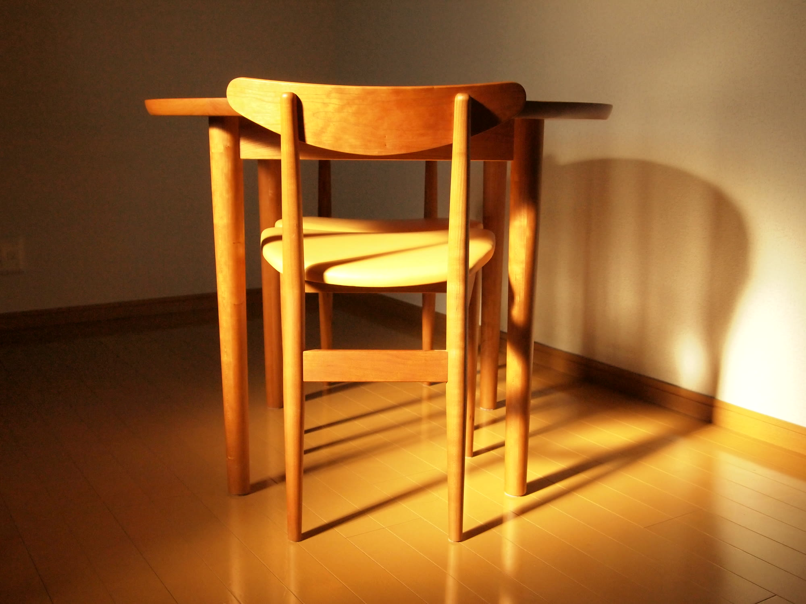
Round dining set, black cherry, 2012
公園のように、
だれもが座れる
家具を。
公園は、年齢も性別も関係なく、
だれもがそれぞれの用事で
立ち寄れる場所です。
この工房にも、そんなふうに
来てほしいと考えて、
この名前をつけました。
Works
これまでの家具
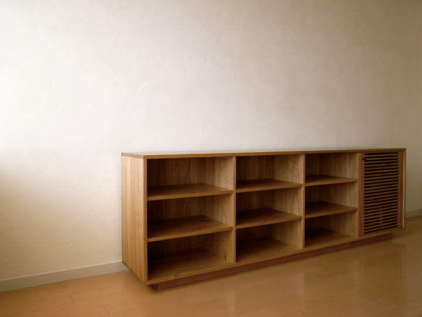
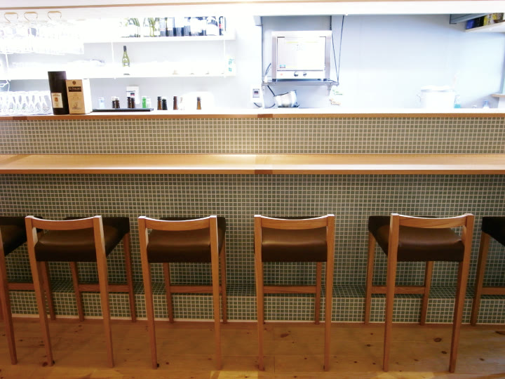
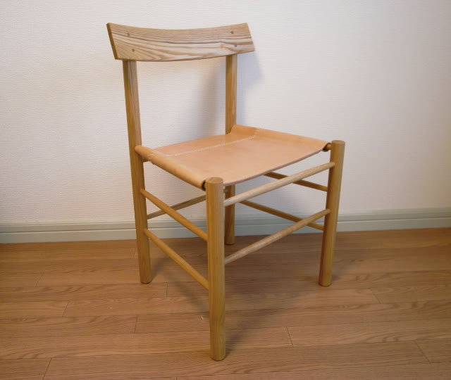
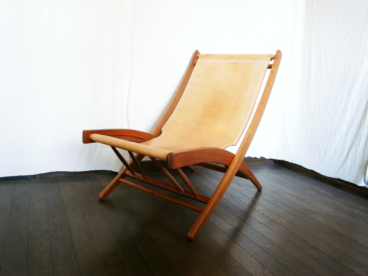
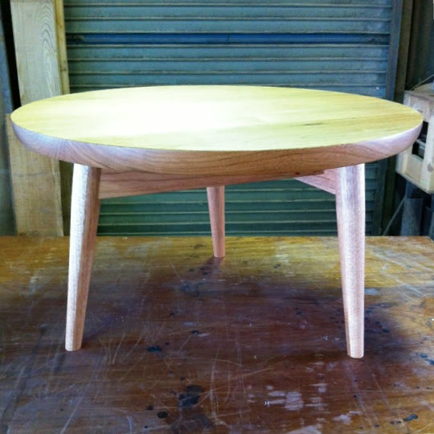
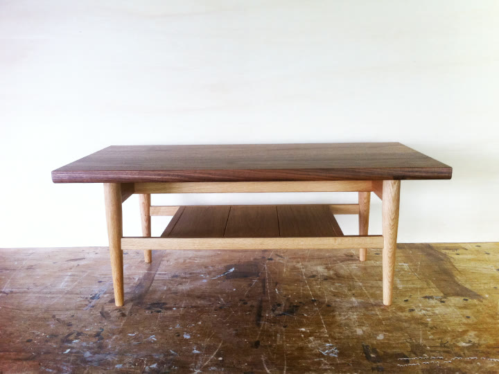
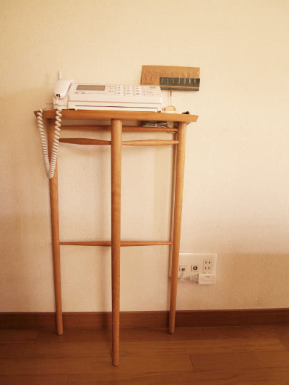
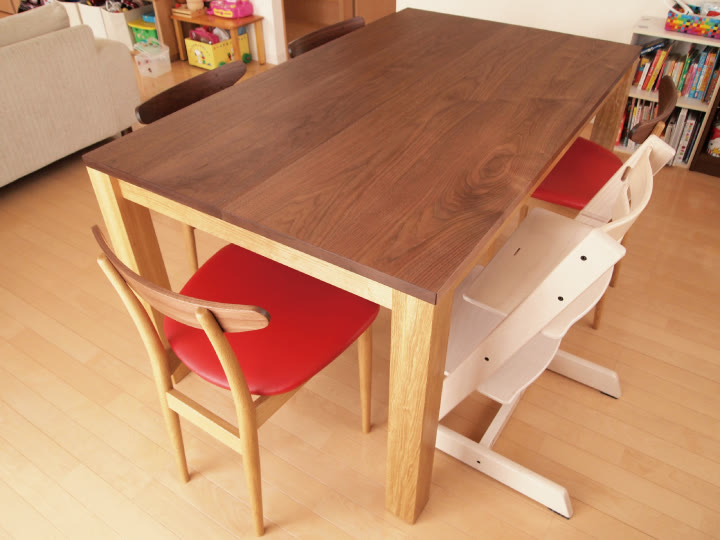
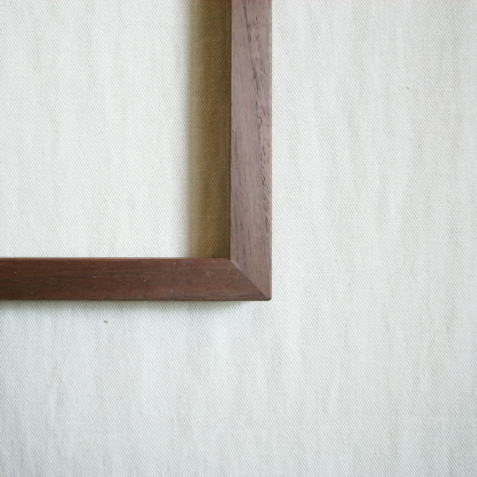
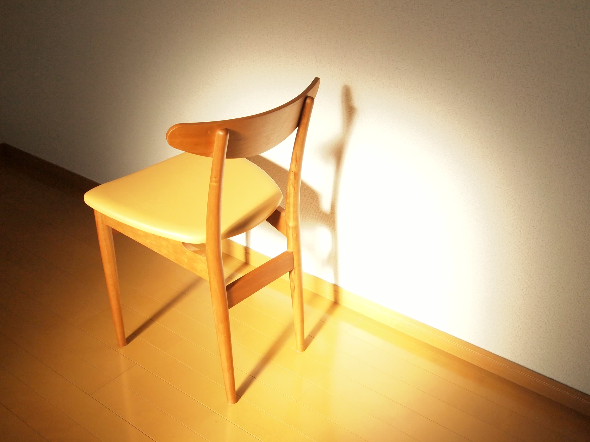
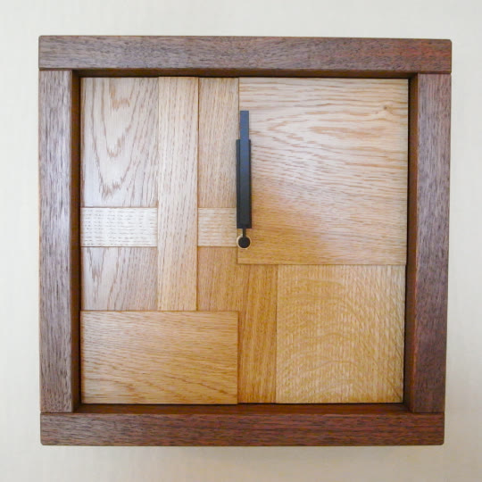
Living board
2010
クルミ
W2,215 × D380 × H720
Index
寸法と材は、使う場所と人に合わせて決めています。
- Living boardW2,215 × D380 × H720 クルミ2010
- cafe gogo店舗の椅子とカウンター タモ2010
- Dining chairW480 × D420 × H780 タモ・ヌメ革2010
- Folding chairW580 × D980 × H890 ブラックチェリー2010
- Round low tableW600 × D600 × H350 クルミ2010
- Low tableW900 × D450 × H350 ウォールナット・ナラ2011
- Phone standW500 × D250 × H800 ナラ2011
- Dining setW1,500 × D900 × H760 ウォールナット・ナラ2012
- Photo frame寸法・樹種はご希望に合わせて2012
- Round dining setW900 × D900 × H700 ブラックチェリー2012
- Wall clock “Frame”W300 × D60 × H300 山本友丘森氏との共作2012
Craft
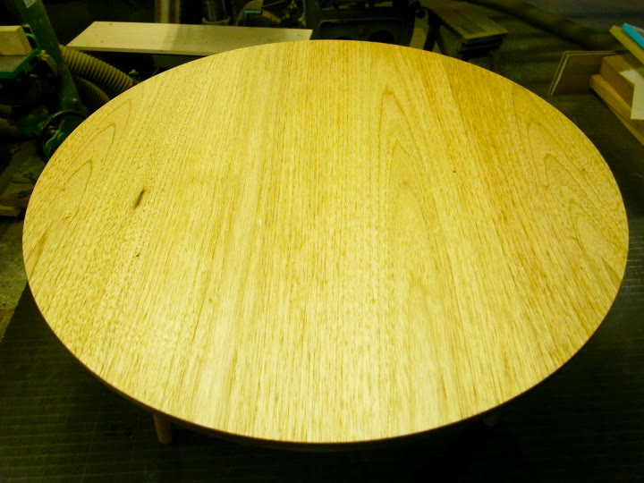
材料は良質な天然木の無垢材。ホゾ組みを基本に、その家具にいちばん合う組み方を選びます。
Oil finish
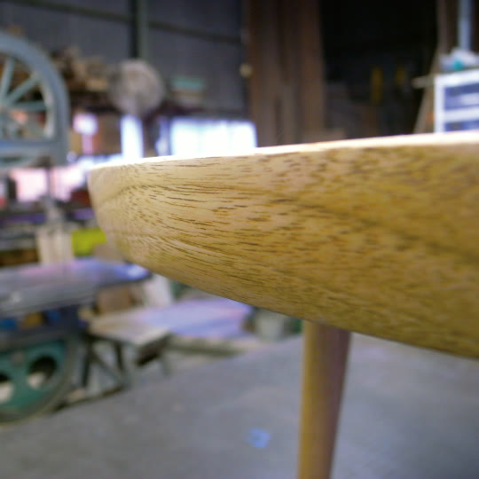
仕上げは天然塗料のオイル。表面に膜をつくらないので、手ざわりは木そのものです。
About
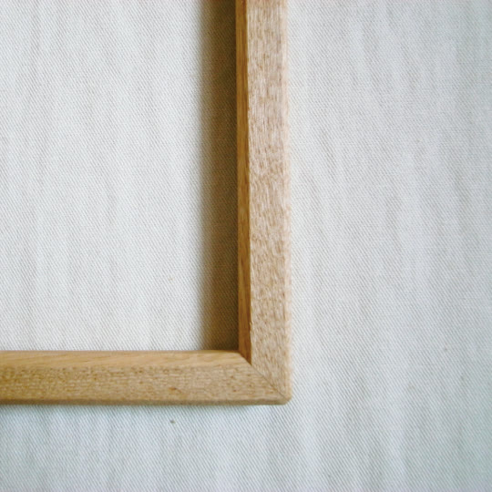
公園は、だれもがそれぞれの用事で立ち寄れる場所です。この工房にもそんなふうに来てほしいと考えて、Public Gardenと名づけました。
山添 大輔 Daisuke Yamazoe
1982 愛知県生まれ
2005 愛知工業大学 建築工学科 卒業
2007 TSD専門学校 家具デザイン学科 卒業
2009 北名古屋市でPublic Gardenを設立
Order
家具はすべて、ご注文を受けてからつくります。納期はおよそ1〜2ヶ月。製作の込み具合で、もう少しお待ちいただくことがあります。
今月ご相談いただくと、お届けは2〜3月ごろが目安です。